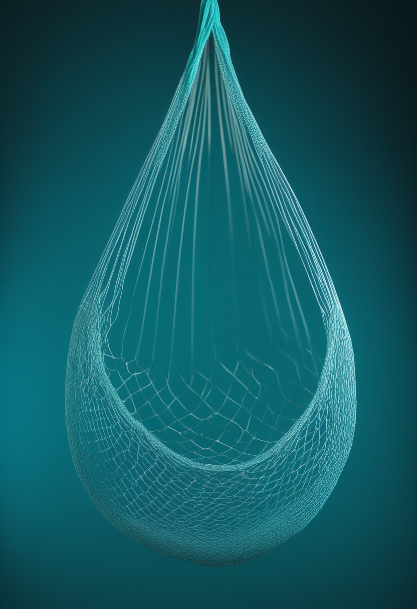
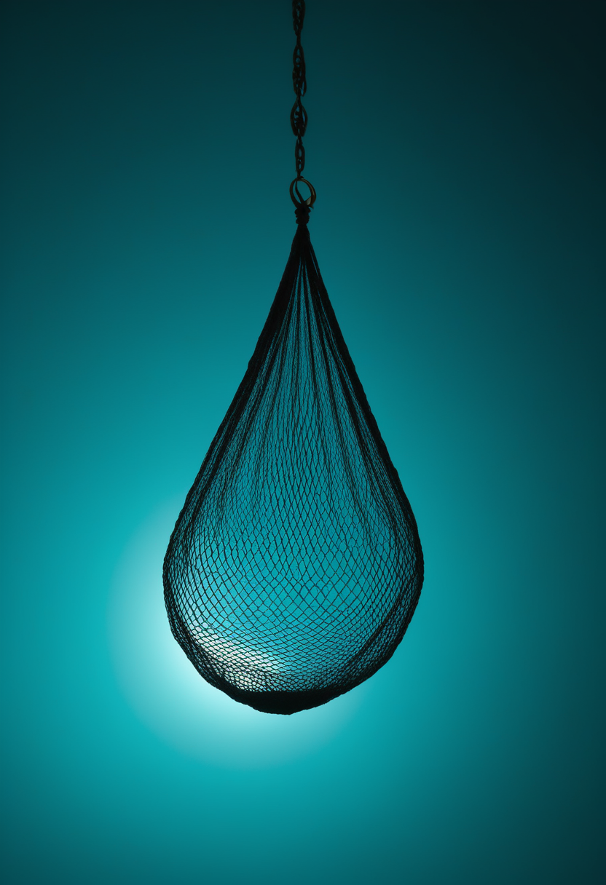
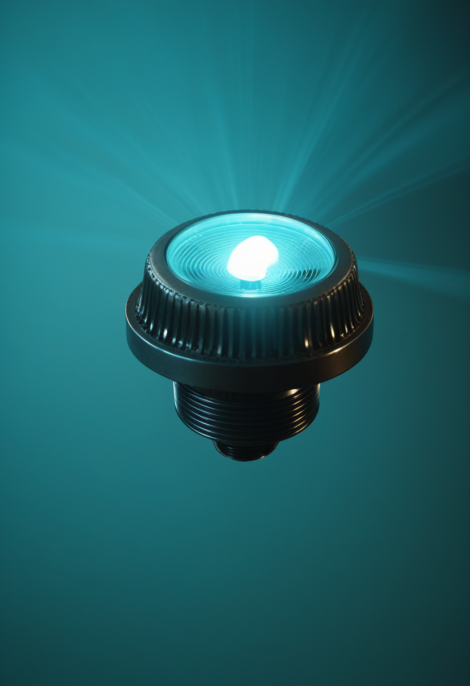
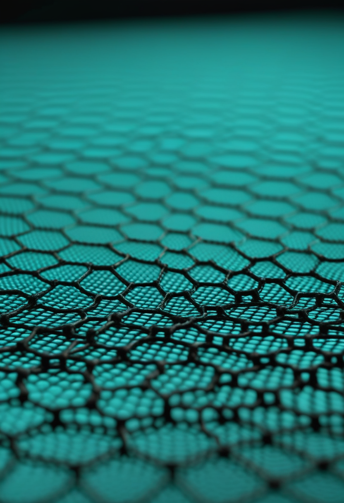
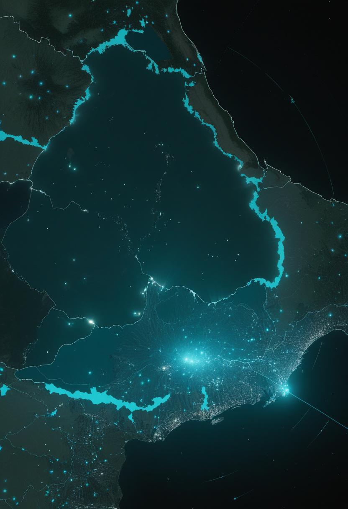
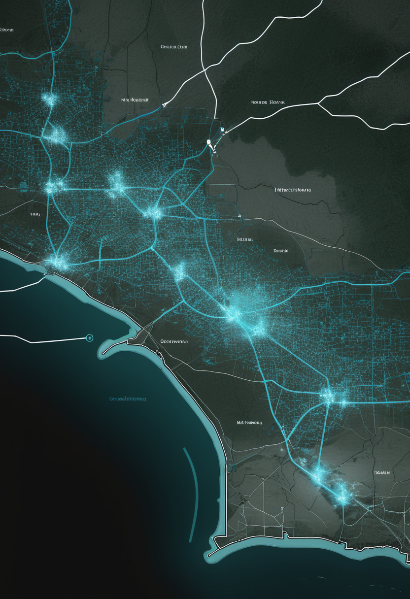

火曜日の便り。今日は素材提供が無く、自分で5つの領域を調べて一号分を組んだ。目玉は、イングランドで新生児を対象にした脊髄性筋萎縮症(SMA)スクリーニングの大規模な評価研究が、当初計画より3か月早く今月から検査施設で動き始めたこと。命の章ではこれに加え、ポーランドの実臨床研究が薬の切替による運動機能の改善と、全例に見られた肝毒性の両方を数値で示したことを届ける。基盤の章では、コンゴ民主共和国のエボラ確定例が9,964例・死亡4,851人へ増えたことと、アフリカCDC所長が10月28日の緊急会合を『3地域に拡大した事態』として位置づけたこと、フランスの家畜で広がるシャモンダウイルスの流産フェーズを。自由の章では、侵襲型BCIの商業化を『把持機能は市場に届いたが、埋め込み安定性とチップ発熱が壁』と見る市場分析と、グラフェン電極を使った脳腫瘍摘出手術中の試験を。畏敬の章では、ESAの探査機BepiColomboが1年の延期を経て11月21日に水星周回軌道へ入る計画を。美の章では、スイス・バーゼルで見つかったほぼ完全な中世の暖房装置、イタリアの洞窟で検出された未知の空洞、アンデス山中の謎の石造構造物という3つの考古学的発見を取り上げる。
英保健社会福祉省(DHSC)は7月16日、脊髄性筋萎縮症(SMA)の新生児スクリーニングについて、イングランドの全新生児を対象とする大規模な評価研究を発表していた。当初は75万5千人規模での実施を想定していたが、対象をイングランドの全新生児に拡大。既に機器の整った7つの検査施設が今月10月から検査を開始し、残る6施設も2027年10月までに参入、2027年中にイングランド全土のスクリーニング施設での提供を目指す計画だ。恒久的なNHSスクリーニングではなく研究段階だが、得られたデータは英国国家スクリーニング委員会(UK NSC)が将来の正式勧告を判断する材料になる。国立健康研究機構(NIHR)はオックスフォード大学が主導する評価に410万ポンドの資金提供を確約済みで、財源の全体像は確定していないものの、既にSMAスクリーニングを導入しているスコットランドの民間資金活用の枠組みも参考にする方針だ。症状が出る前に治療を始められれば予後が大きく変わるというSMAの性質を踏まえ、『早く見つける』という最初の一歩が、国レベルでようやく動き出した。

英保健社会福祉省(DHSC)は2026年7月16日、イングランドの新生児を対象とした脊髄性筋萎縮症(SMA)スクリーニングの大規模な評価研究を発表した。当初は75万5千人規模での実施を想定していたが、対象をイングランドの全新生児に拡大。既に機器が整った7つの検査施設が今月(10月)から検査を開始し、残る6施設も2027年10月までに参入する計画で、2027年中にイングランド国内の全新生児スクリーニング施設での提供を目指す。これは研究であって恒久的なNHSスクリーニングではなく、得られたデータを英国国家スクリーニング委員会(UK NSC)が今後の正式な勧告の判断材料にする。国立健康研究機構(NIHR)は、オックスフォード大学が主導する評価研究に410万ポンドの資金提供を既に確約している。財源は確定していないが、保健社会福祉省は投資を求める方針で、スコットランドで採用された民間資金活用の枠組みも参考にするとしている。スコットランドでは3月23日以降に採取された新生児血液検体から、既存の10疾患に加えてSMAスクリーニングが提供されている。
ポーランド・ルブリン医科大学の単施設後ろ向き研究(2020年4月~2024年3月、40人)は、ヌシネルセンまたはリスジプラムによる治療からオナセムノゲン・アベパルボベク(ゾルゲンスマ)への切替効果を調べた。HFMSE評価を受けた21人は中央値30点から36点へ(+7点)、CHOP-INTEND評価を受けた19人は中央値27点から37点へ(+5点、P=.0001)改善した。臨床的に意味のある改善(HFMSEで3点以上またはCHOP-INTENDで4点以上)に達した割合は、投与1か月時点で67.5%、6か月時点では95%に上った。一方、全患者で肝酵素の上昇が見られ、多くは投与後5~7日目に発生、コルチコステロイドでの管理や投与の強化・延長が必要になった例もあった。血小板減少症も13人(32.5%)で確認されたが、血栓性微小血管症や多臓器不全の報告はなかった。研究はNeuromuscular Disorders誌に発表され、2026年3月にNeurologyLiveが詳細を報じた。
新生児の血液一滴から始まるスクリーニングと、既に治療を始めた患者が薬を切り替える判断 ― 入口と途中、SMA医療の両端で『いつ、何を選ぶか』という問いが同時に動いている。

台湾の調査会社DIGITIMESは10月23日、侵襲型ブレイン・コンピュータ・インターフェース(BCI)が長期的な商業的可能性を見せ始めていると分析した。見出しは『BCIによる把持(grasping)機能は市場に到達したが、埋め込みの安定性とチップの発熱が、より高度な用途の実現を2030年以降に先送りさせている』とする。詳細は有料記事のため確認できないが、同じ週に中国側でも、脳機器のインプラントが『準商業化段階』に入ったとの業界評価が報じられている。北京の調査機関による4月の報告では、中国の脳機接口(BCI)市場規模は2026年に50億元を超え、2030年には150億元規模に達する見通しとされ、2026年第1四半期だけで業界への資金調達総額が既に前年通期を上回ったという。短中期に最初に収益化が見込まれるのは、侵襲型ではなく非侵襲型の医療・リハビリ分野だとの見方も示されている。埋め込み型が『動く』こと自体は実証が進む一方、『安全に長く埋め込み続けられるか』という定着の技術が、次の段階への壁として残っている。

バルセロナのINBRAIN Neuroelectronicsは、マンチェスター大学とノーザン・ケア・アライアンスNHS財団トラストが主導する、グラフェンを使った皮質電極の世界初のヒト試験(NCT06368310)で患者10人の登録を完了したと4月に発表した。脳腫瘍摘出手術を受ける患者を対象に、手術中の脳機能マッピング・デコーディングにグラフェン電極を使う。8人が実際に手術で電極を使用され、周術期の有害事象や機器の不具合は確認されなかった。最初の4人の中間解析では、覚醒下手術中に電極が発話に関連する高ガンマ帯域の脳活動を音素ごとに異なる形で捉えたことが報告されている。安全性の主要評価項目には術後90日間の画像を含む観察期間があり、その最終結果はまだ公表されていない。
市場分析が指摘する『埋め込みの壁』と、グラフェンという新しい材料で壁に挑む現場の試験 ― 商業化の数字と、手術台の上の一枚の電極は、同じ問いの両面を映している。

ECDCが10月26日16時30分(現地)に更新した集計によると、コンゴ民主共和国(DRC)の累計確定例は9,964件、関連死亡は4,851件(死亡データは10月24日時点)。10月24号で報じた9,704例・4,687人から、4日間で260例・164人の増加となった。ケニアは確定9例のまま変わらないが、死亡は10月25日時点で2件に増え、前号までの1件から倍増した。ナイジェリアは10月20日の初症例以降、新たな確定例の報告はない。ウガンダは流行終息の状態が続いている。症例数の増加ペース自体に大きな変化はないが、死亡者数の増加はDRC・ケニア双方で続いている。
アフリカCDCのジャン・カセヤ所長は、10月28日に予定するアフリカ各国保健大臣との緊急オンライン会合について、自身のX投稿で『エボラは現在アフリカの3つの地域に影響を及ぼしている。この状況は緊急の行動と最高レベルの政治的指導力を求めている』と述べた。会合は、ウガンダ経由の渡航者と関連するとみられる症例がナイジェリア・ケニアで相次いで確認されたことを受けて招集された。アフリカCDC自身の発表でも、会合の狙いは『共同対応の強化』にあるとされている。DRCで5月に始まった今回の流行は、9か月足らずで3地域・複数国に波及し、史上最速のエボラ流行という評価が繰り返し示されている。

フランスでは2026年6月、東部ドゥー県・アン県の乳牛で発熱・下痢・乳量の急減が報告され、ナノポアシーケンシングにより未記載のシムブ血清群オルトブニヤウイルス(欧州シャモンダウイルスと仮称)が同定された。7月にはサヴォワ・オート=サヴォワ県でも同様の症例が見つかり、9月の国会質問書によれば22県に拡大、その後の報道では46県の牛群で発生が確認されたとされる(確認日は取れず)。最初に調査された9群では、バルク乳の生産量が15~75%減少。別に流産を調べた18群では、流産の2~4週間前に発熱・元気消失が報告され、胎盤や胎児の脾臓・脳からウイルスRNAが一貫して検出された。トゥールーズ国立獣医学校の研究者は、流行の深刻度自体は『中程度』としつつ、流産フェーズの方がより重大な懸念であり、生まれた子牛への影響はまだ分かっていないと述べている。ベルギーでも無症状の羊からウイルスが確認されており、ヒトへの感染は現時点でフランスの1例のみだが、家畜での広がりは欧州規模の監視を要する段階に入っている。
人への一例が公衆衛生の警報を鳴らす一方、家畜の間では数十県にわたる静かな広がりと、流産という重い代償が同時に進んでいた。エボラも家畜ウイルスも、数字が示す『今』の裏で、見えにくい広がりが続いている。
ESAとJAXAの共同探査機BepiColomboは、水星周回軌道投入(オービット・インサーション)を2026年11月21日に実施する計画だ。当初は2025年12月の投入を予定していたが、電気推進スラスタの推力が投入に必要な最低水準を下回ったため、新たな軌道計画を組み直し、約1年遅れての実施となった。投入後は、水星周回機(MPO)と日欧共同の磁気圏観測機(Mio)が12月9~10日に分離される予定。科学観測の本格開始は2027年4月の見込みで、2018年10月の打ち上げから8年を超える巡航の末、ようやく目的地での観測段階に入る。水星は太陽に最も近い惑星でありながら、探査機による訪問は過去にマリナー10号とメッセンジャーの2例のみという、観測が最も進んでいない内側の惑星の一つだ。
8年かけてここまで来た探査機が、あと1か月足らずで目的地に着く。1年の延期は後退に見えるが、最後の数週間まで慎重に軌道を組み直し続けたからこそ辿り着ける場所がある。
スイス・バーゼル州考古学局は9月23日、同市ペータースグラーベン52番地(旧職業学校の中庭)で、中世の女子修道院グナーデンタールの跡から13~14世紀の温風暖房装置を発掘したと発表した。焚口から伸びる通路の上に石を詰めた蓄熱室があり、温められた空気が8つの開閉式の開口部を通って、おそらく食堂として使われていた上階の部屋へ送られる仕組みだった。火を焚いて煙が出ている間は開口部を閉じ、煙が収まってから開けて暖気を取り込んでいたと考えられている。この種の暖房装置としてはスイス国内で類を見ないほど保存状態が良く、ヨーロッパでも最も重要な現存例の一つとされる。考古学チームは装置の3Dモデルを作成し、現地の再開発計画に組み込む予定だ。修道院は1231年頃フランシスコ会系の女子修道院として創設され、約20年後に別の場所へ移転、その後シトー会修道女やクララ会修道女が使用し、宗教改革後に解体された。
イタリア・プーリア州パラビタ近郊のグロッタ・デッレ・ヴェネリ(ヴィーナスの洞窟)周辺で実施された地中探査レーダーと比抵抗トモグラフィーを組み合わせた調査により、未記録の空洞とみられる異常が複数検出された。調査はマルタ大学とイタリアの文化遺産研究機関の研究者らによるもので、成果は2025年12月に学術誌AAPP(アッティ・デッラ・アッカデーミア・ペロリターナ・デイ・ペリコランティ)に発表され、2026年10月にイタリアのメディアが改めて報じた。この洞窟は1966年の発掘でジュゼッペ・ピスコポ氏らが発見した旧石器時代の女性小像(通称『ヴィーナス』)で知られ、ネアンデルタール人の居住の痕跡も確認されている。今回見つかった空洞がどのような空間で、何を含んでいるのかはまだ分かっていないが、研究チームは追加調査でこの謎に迫りたいとしている。
アルゼンチン・メンドーサの登山家カルロス・ゴッビ氏は2025年5月、Google Earthの画像でアンデス山中コルディリェラ・デル・ティグレ(メンドーサ・サンフアン州境)に奇妙な模様を発見した。3度目の挑戦となる約4日間の行軍を経て、2026年2月14日に現地調査チームが到達。直径27~35メートルの円形構造、方形の区画、通路、石を敷いた水路などの乾式石積みが確認された。国立クージョ大学の考古学者オラシオ・チャバッツァ氏(ArqueoAndesプロジェクト共同代表)は、ペルーのナスカの地上絵との単純な比較には慎重な立場を示し、『デザインも作り方も、ナスカとの類似は見られない』としている。ナスカの地上絵が地表を掘って描かれるのに対し、この遺跡は石を積み上げて作られている点が異なる。土器や食料残渣など居住を示す表面的な証拠は見つかっておらず、研究者らは儀礼的・象徴的な機能を検討している。アルゼンチンとスペイン(ハエン大学)の共同チームが、ドローンによる高精度測量や地球化学分析のため2026年12月に再訪する計画だ。
石を詰めた暖房室、地中に眠る未知の空間、山の上で空からしか気づかれなかった石の輪 ― 保存のされ方も発見のきっかけも違う3つの遺跡だが、どれも『まだ全部は分かっていない』という共通点を持つ。
火曜日の便り。今日は素材提供が無く、5つの領域を自分で調べて一号分を組んだ。命の章では、イングランドで新生児SMAスクリーニングの評価研究が当初計画より3か月早く今月始動したことと、ポーランドの実臨床研究が薬の切替による運動機能改善と全例の肝毒性を数値で示したことを届けた。自由の章では、侵襲型BCIの商業化を『把持機能は市場に届いたが埋め込み安定性とチップ発熱が壁』と見る市場分析と、グラフェン電極を使った脳腫瘍摘出手術中の試験を取り上げた。基盤の章では、コンゴ民主共和国のエボラ確定例が9,964例・死亡4,851人へ増えたことと、アフリカCDC所長が10月28日の緊急会合を『3地域に拡大した事態』として位置づけたこと、フランスの家畜で広がるシャモンダウイルスの流産フェーズを伝えた。畏敬の章では、ESAの探査機BepiColomboが1年の延期を経て11月21日に水星周回軌道へ入る計画を届けた。美の章では、スイス・バーゼルのほぼ完全な中世の暖房装置、イタリアの洞窟の未知の空洞、アンデス山中の謎の石造構造物という3つの考古学的発見を取り上げた。
では、また明日の朝に。 — JaH